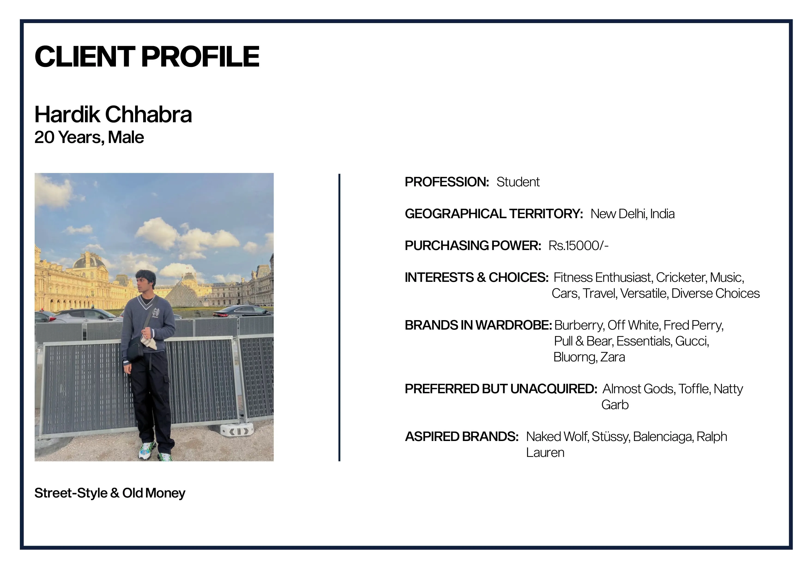
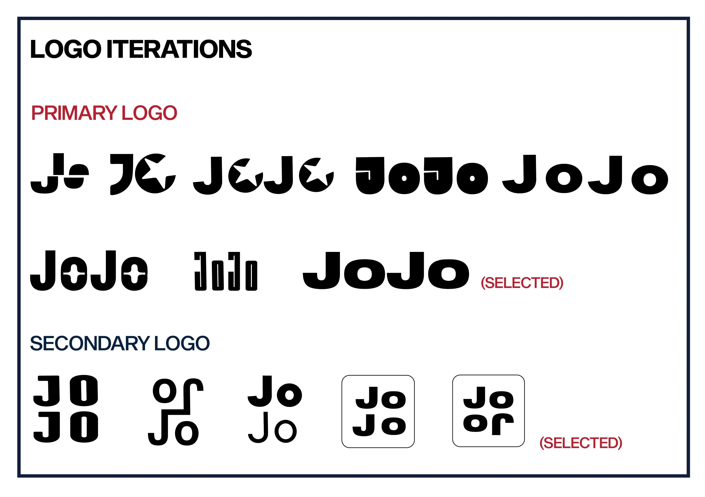
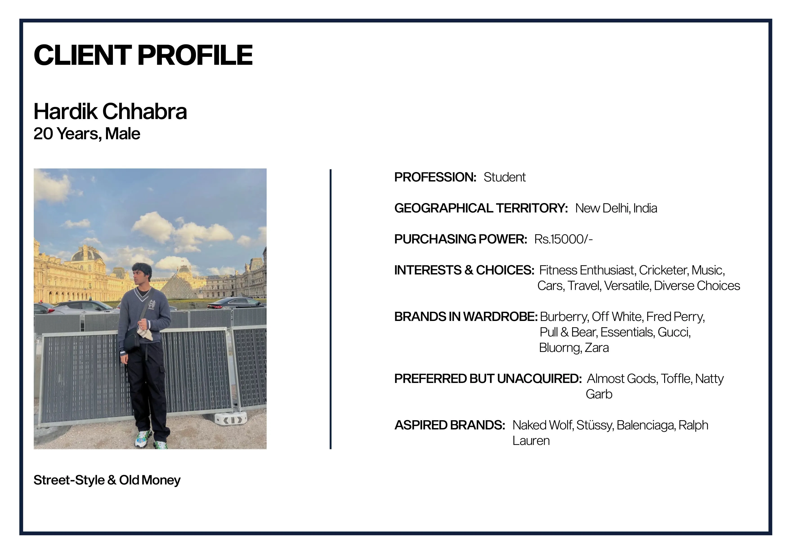
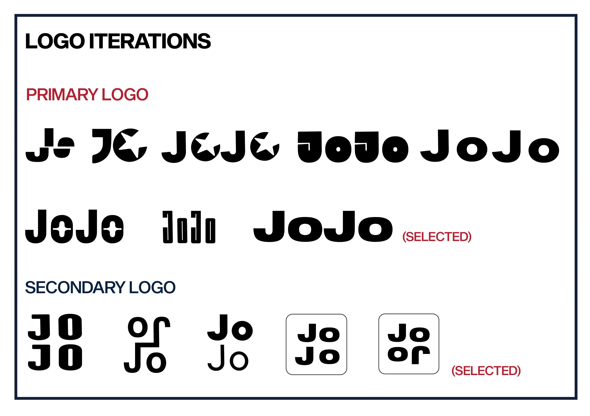
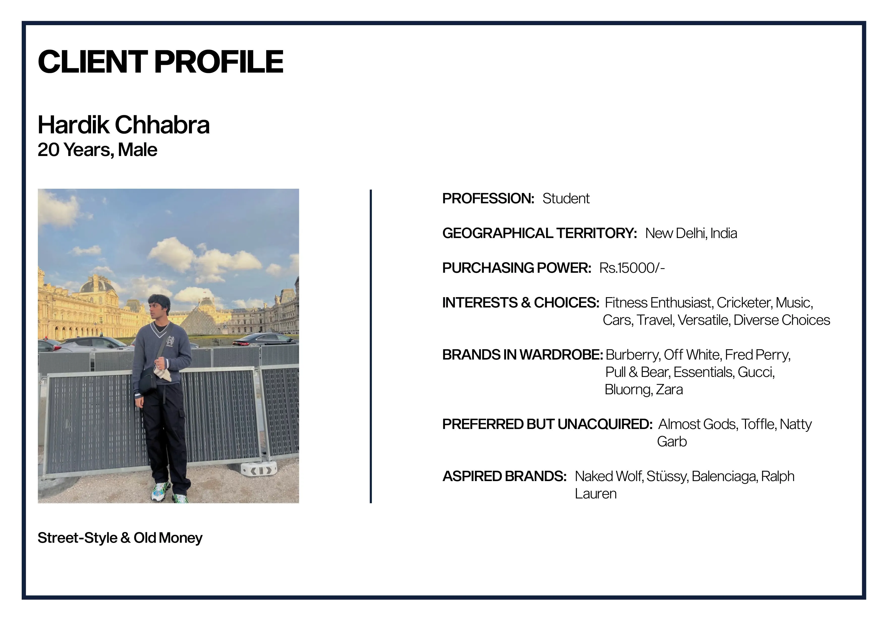
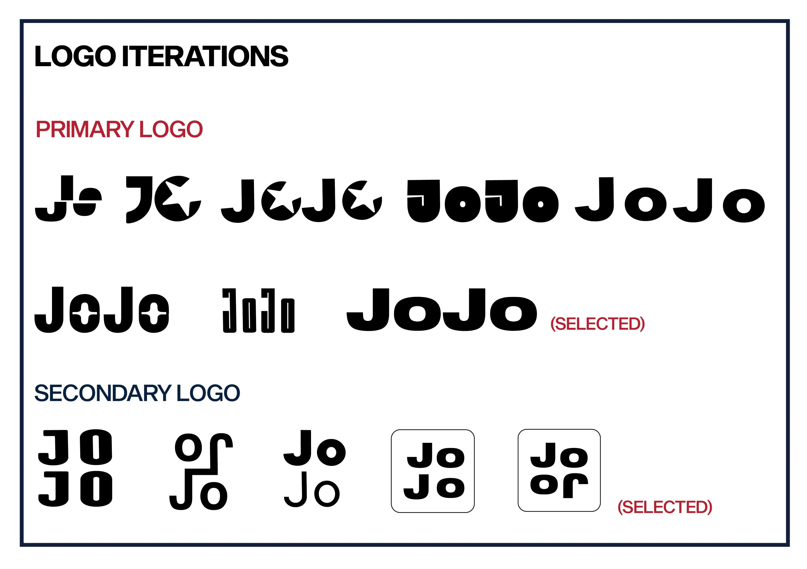

2025
1 Month
16 Sept 2024 - 18 Oct 2024
This project involved the strategic application of Principles of Branding to conceptualize and develop a comprehensive Brand Guideline and Manual for a hypothetical fashion brand. The objective was to create a cohesive and dynamic brand identity that aligns with a contemporary cultural narrative shaping the fashion industry.
Key deliverables included defining the brand’s story and mission, developing a brand prism, crafting a memorable tagline, designing a cohesive visual identity, and creating on-garment branding assets along with photography and videography guidelines to ensure consistency across all touchpoints.
This document presents an in-depth exploration of the above elements, offering a comprehensive analysis of the branding strategy and its implementation.
The assignment reminded me of my first day in Delhi in 2022. Coming from Ranchi, a small town, I noticed a stark difference in fashion trends. In Delhi, the younger generation, particularly Gen Z, embraced streetwear with oversized, baggy pants and loose-fitted shirts—a style that resonated with the urban culture.
This observation sparked my curiosity. Through conversations and observations, I identified a gap: while many people wanted to adopt these trends, the loose silhouettes did not complement all body types. This insight laid the foundation for a brand that caters to individual body types while embracing contemporary trends.
Fast forward to 2024, I delved deeper into cultural influences. By analysing runway shows, I observed the rise of streetwear, old money aesthetics (timeless luxury and sophistication), and free-size clothing dominating the runways. I envisioned a brand blending street-style’s casual edge with old money’s elegance, targeting an audience aged 15 to 40 (unisex). Further, to create a personal connection and recall value, I chose a name inspired by my own identity.




Ensuring brand sustainability and scalability over time. Balancing customization-focused services with broader market appeal. Addressing the needs of non-fashion-centric individuals while staying relevant to fashion-forward audiences.
Customization and Tweaking: Designed an experiential retail and online space where customers can personalize and tweak garments from a curated collection, embracing individuality and diverse preferences.
Basics and Elevated Basics Collection: Launched a mix of timeless basics and trend-driven pieces to appeal to both fashion enthusiasts and non-fashion-centric individuals, adhering to the “70/30 rule” for versatile wardrobe options.
Solving real-world problems rather than solely focusing on aesthetics.
Solving real-world problems rather than solely focusing on aesthetics.
Solving real-world problems rather than solely focusing on aesthetics.
Solving real-world problems rather than solely focusing on aesthetics.
This project offered valuable insights into bridging creativity with functionality. It reinforced the importance of:
Consumer-Centric Design: Solving real-world problems rather than solely focusing on aesthetics.
Feedback Integration: Iterative logo design through peer and mentor feedback ensured simplicity and recall value.
Challenges: Identifying a brand name and logo that balances uniqueness and memorability.
Addressing scalability and sustainability while appealing to both fashion-forward and non-fashion-centric audiences.
Key Takeaways: Understanding market demands extends beyond design; it requires empathy, adaptability, and strategic thinking. Feedback loops and real-world applications are crucial to achieving a brand’s success.